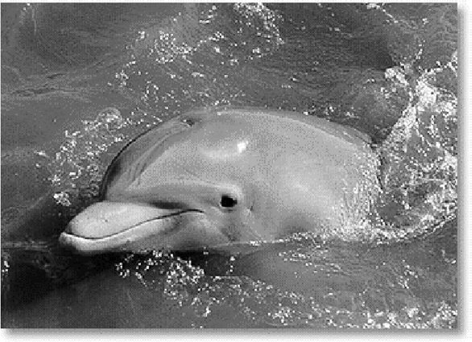

What is a Dolphin
There are about 80 species of whales, dolphins and porpoises known to exist in the world today. They all belong to the order of mammals known as cetaceans. Cetaceans are divided into two suborders - the Mysticeti (or baleen whales) and the Odontoceti (or toothed whales). These suborders, and the smaller subgroups beneath them, are based on a logical, well-defined system for classifying animals by common characteristics. However, the popular names given to cetaceans are often less consistent and more confusing. For instance, some small cetaceans are called whales. Most of the mysticetes are referred to as great whales, as is the sperm whale (an odontocete), because of their size. Both the killer whale and the pilot whale are members of the family Delphinidae, which includes all oceanic and some coastal and river dolphins. The narwhal belongs to a different family - the monodontidae, which also includes the beluga (or white whale). However both of these can also be referred to as dolphins, as they belong to the superfamily Delphinoidea. Although many people use dolphin and porpoise interchangably, strictly speaking "porpoise" refers only to the six members of the family Phocoenidea which are all small and robust species. For the most part, almost any toothed whale could be called a dolphin without being too far off.
